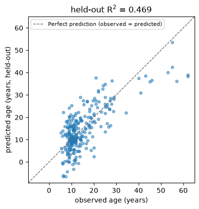
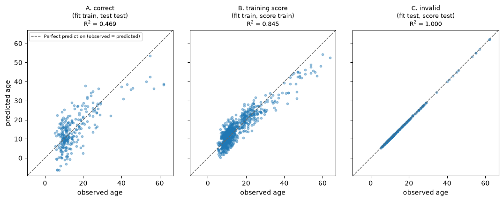
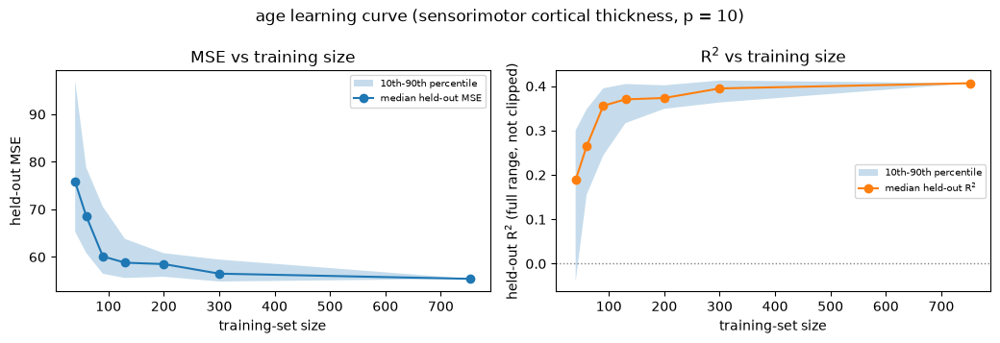

Exercise 2: Regression and Bias-Variance Trade-Off#
Run or download this notebook
This page is fully readable as it is, and the interactive activity works here in the browser. To run or change the Python code, use the portable version of the notebook:
View or download the portable
.ipynbfor VS Code or Jupyter
The portable notebook keeps every Python analysis cell and swaps the embedded activity for a link back to this page.
What this notebook covers#
This is Exercise 2 of Machine Learning for Neuroscience. Exercise 2 is about
regression and the bias-variance tradeoff. In class, we will see how regression is
performed in Python using linear-regression tools from scikit-learn. At home, you will
apply the same regression ideas with k-nearest neighbours (KNN) and use it to explore the
bias-variance tradeoff.
ABIDE’s own research aim is autism-related group differences, not age. Here the target is age, a continuous variable, so the task is regression: predicting a participant’s age from their cortical measurements. This notebook does not address autism diagnosis – that remains ABIDE’s central question, not this one.
In this notebook you will:
load our ABIDE-II data table – FreeSurfer brain measurements, with
ageas a native column;build one linear-regression workflow: split, scale, fit on training data, predict held-out data, score it – first with the scaling steps written out explicitly, then with the equivalent
scikit-learnpipeline shortcut;compare that held-out score with the training score and with a score computed by fitting on the test data itself, to see correct and misleading ways to evaluate a model;
introduce k-nearest neighbours (KNN) regression, fit on this same data and split;
see the classic bias-variance tradeoff that KNN’s neighbour count,
k, makes concrete;compute how training and validation error change across every
k, directly from this dataset;explore that yourself with a browser activity, including how predictions vary across different training samples.
Prerequisites: the regression lecture; comfort with pandas, numpy, matplotlib,
and the scikit-learn fit / predict pattern.
1. Our data table#
Each row is one participant. The columns fall into three kinds:
phenotype columns – possible outcomes and context:
age,sex, and diagnosticgroup;brain columns – one FreeSurfer measurement (
fsCTcortical thickness,fsAreasurface area,fsVolgrey-matter volume,fsLGIgyrification) for one cortical region of one hemisphere, e.g.fsCT_L_46_ROI. The regions are the 360 parcels of the HCP-MMP1 (Glasser) atlas;identifiers –
subject,site.
This exercise’s outcome is age: it is a native column of the brain
table itself – no join to another file is needed, and it has no missing
values for any of the 1004 participants.
This is a wide table: one measurement per column, ready for X / y. It is
not the small phenotype-only table from Exercise 1.
data table: 1004 participants x 1446 columns
# A compact look: the phenotype columns plus three representative brain columns,
# then a separate count summary. (Printing all 1446 columns would tell you
# nothing.)
def measure_of(col):
return col.split("_")[0] # fsCT, fsArea, fsVol, fsLGI
def roi_of(col):
return col.split("_", 2)[2].rsplit("_ROI", 1)[0] # "L_46" etc.
preview_cols = ["subject", "site", "group", "age", "sex",
"fsCT_L_46_ROI", "fsArea_L_IPS1_ROI", "fsVol_R_V1_ROI"]
display(model_df[preview_cols].head(4))
measures = sorted({measure_of(c) for c in BRAIN_COLS})
rois = sorted({roi_of(c) for c in BRAIN_COLS})
print(f"phenotype columns : {len(PHENO_COLS)} -> {PHENO_COLS}")
print(f"brain features : {len(BRAIN_COLS)} = {len(measures)} measures x {len(rois)} region-hemispheres")
print(f"measurement types : {measures}")
print(f"missing brain cells: {int(model_df[BRAIN_COLS].isna().sum().sum())}")
print()
print("age available for", int(model_df['age'].notna().sum()), "of", len(model_df), "participants")
| subject | site | group | age | sex | fsCT_L_46_ROI | fsArea_L_IPS1_ROI | fsVol_R_V1_ROI | |
|---|---|---|---|---|---|---|---|---|
| 0 | 29293 | ABIDEII-KKI_1 | 1.0 | 8.893151 | 2.0 | 2.366 | 326.0 | 5254.0 |
| 1 | 28997 | ABIDEII-OHSU_1 | 1.0 | 12.000000 | 2.0 | 2.579 | 266.0 | 6510.0 |
| 2 | 28845 | ABIDEII-GU_1 | 2.0 | 8.390000 | 1.0 | 2.690 | 526.0 | 6535.0 |
| 3 | 29210 | ABIDEII-NYU_1 | 1.0 | 8.300000 | 1.0 | 3.132 | 307.0 | 7915.0 |
phenotype columns : 4 -> ['age', 'age_resid', 'sex', 'group']
brain features : 1440 = 4 measures x 181 region-hemispheres
measurement types : ['fsArea', 'fsCT', 'fsLGI', 'fsVol']
missing brain cells: 0
age available for 1004 of 1004 participants
Think first
Before going on, name – for this table – (a) this exercise’s outcome, (b) roughly how many columns could be features, (c) what a single row is, (d) the four measurement types, and (e) how a brain column encodes both a region and a hemisphere.
Check your reasoning
Outcome: age (in years). Features: the ~1440 fs... brain columns. A row:
one participant. Measurement types: fsCT, fsArea, fsVol, fsLGI. A
brain column name is fs<measure>_<hemisphere>_<region>_ROI, so
fsCT_L_46_ROI is cortical thickness of left area 46.
2. Building one linear-regression workflow#
Target: age, in years. Features: every one of the 360 cortical
atlas parcels for cortical thickness (fsCT), bilateral. Age-related
cortical thinning is a whole-cortex phenomenon (Bethlehem et al. 2022;
Storsve et al. 2014), not one a small hand-picked region subset would
represent fairly, so this recipe uses the full parcel set for one
measurement type rather than a literature bundle. 360 features stays well
under the ~750 training rows below, so ordinary least squares is well posed
(Section 5 pushes training size below the feature count on purpose).
The workflow is shown twice: first with every preprocessing step written out
explicitly, then as the equivalent, more convenient scikit-learn pipeline
shortcut that the rest of this notebook uses.
# The full set of 360 cortical-thickness columns: every parcel, both
# hemispheres, of the HCP-MMP1 atlas.
FEATURES = [c for c in BRAIN_COLS if c.startswith("fsCT_")]
assert all(c.startswith("fsCT_") for c in FEATURES) # brain-only
assert "age" not in FEATURES # no target leakage
print(f"{len(FEATURES)} features, e.g. {FEATURES[:3]}")
360 features, e.g. ['fsCT_L_V1_ROI', 'fsCT_L_MST_ROI', 'fsCT_L_V6_ROI']
# 1-2. brain-only X and target y; age has no missing values, but the same
# drop-missing-target step from Exercise 2's other analyses is kept here
# for consistency.
has_age = model_df["age"].notna()
X = model_df.loc[has_age, FEATURES].to_numpy(float)
y = model_df.loc[has_age, "age"].to_numpy(float)
groups = model_df.loc[has_age, "group"].to_numpy() # 1 = autism, 2 = control
# 3. one fixed, reproducible split, stratified by diagnosis so train and test
# have a similar autism / control mix.
X_train, X_test, y_train, y_test, groups_train, groups_test = train_test_split(
X, y, groups, test_size=0.25, random_state=42, stratify=groups
)
print(f"n_train = {len(y_train)} n_test = {len(y_test)} n_features = {X.shape[1]}")
n_train = 753 n_test = 251 n_features = 360
# 4-7, written out explicitly. `fit_transform` LEARNS the training columns'
# means/standard deviations and applies them to the training data in one
# step; `transform` then applies those SAME already-learned values to the
# test data -- the scaler is never fitted on the test set.
scaler = StandardScaler()
X_train_scaled = scaler.fit_transform(X_train)
X_test_scaled = scaler.transform(X_test)
explicit_model = LinearRegression()
explicit_model.fit(X_train_scaled, y_train)
explicit_pred = explicit_model.predict(X_test_scaled)
explicit_r2 = r2_score(y_test, explicit_pred)
explicit_mse = mean_squared_error(y_test, explicit_pred)
print(f"explicit scaling -> held-out R^2 = {explicit_r2:.3f}")
print(f"explicit scaling -> held-out MSE = {explicit_mse:.1f} (RMSE {explicit_mse**0.5:.1f} years)")
explicit scaling -> held-out R^2 = 0.469
explicit scaling -> held-out MSE = 49.6 (RMSE 7.0 years)
A few things about that cell:
scaler.fit_transform(X_train)learns each feature’s training-set mean and standard deviation and applies them to the training rows in one step;scaler.transform(X_test)re-uses those same already-learned numbers on the test rows. The scaler must never be fitted on the test set – fitting it onX_testwould leak information about the test distribution into preprocessing.For unregularised linear regression with an intercept, standardising the features like this does not change the predictions at all –
LinearRegressioncan absorb any linear rescaling into its coefficients and intercept, soexplicit_r2/explicit_mseabove will match the unscaled fit exactly. The step is not wasted, though: it is the same scale-inside-training-only discipline that does change results a lot for a distance-based method like k-nearest neighbours (introduced in Section 4 below), so it is worth building the habit here first, where the numbers make the “no change” case easy to verify.Writing
fit_transform/transformas two separate calls, on two separate variables (scaler,explicit_model), makes that discipline visible.scikit-learn’smake_pipelinebundles the same two objects into one, so thatfiton training data andpredicton new data can never accidentally happen out of order:
# The pipeline shortcut: same two steps (scaler, then linear regression),
# bundled so `.fit()` always scales before fitting and `.predict()` always
# uses the scaler already learned from training data. This is the model used
# for the rest of this notebook.
model = make_pipeline(StandardScaler(), LinearRegression())
model.fit(X_train, y_train)
y_pred = model.predict(X_test)
test_r2 = r2_score(y_test, y_pred)
test_mse = mean_squared_error(y_test, y_pred)
assert np.allclose(y_pred, explicit_pred) # identical to the explicit version above
print(f"held-out R^2 = {test_r2:.3f} (identical to the explicit version above)")
print(f"held-out MSE = {test_mse:.1f} (RMSE {test_mse**0.5:.1f} years)")
held-out R^2 = 0.469 (identical to the explicit version above)
held-out MSE = 49.6 (RMSE 7.0 years)

A few things to hold onto:
the fitted model is a hyperplane in 360-dimensional feature space – there is nothing useful to draw there. The observed-vs-predicted plot shows this directly: points hugging the diagonal mean the model predicted well;
this is a genuinely positive held-out R²: cortical thickness carries real information about age in this sample. A positive result is not automatically a large one – read the number, not just its sign;
this split estimates generalisation to new participants from the same 17 ABIDE-II sites. A random participant split says nothing about how the model would do on an entirely new scanner or site.
Think first
The test set here is a random 25% of participants, drawn from the same 17 sites, scanners, and protocols as the training set. Name one prediction task this held-out score does not speak to.
Check your reasoning
It does not estimate performance on a new site or scanner the model has never seen. Sites differ in scanner hardware, sequences, and the people they recruit; a model tuned on these 17 can lean on site-linked quirks that will not transfer. A leave-one-site-out split would be needed to speak to that.
3. Three ways to score the same model#
Same fixed split, same 360-feature recipe. Three numbers:
fit on |
evaluate on |
what it estimates |
|
|---|---|---|---|
A. Correct |
training rows |
untouched test rows |
performance on new participants |
B. Training score |
training rows |
those same training rows |
how well it fits data it has seen (a diagnostic, not a generalisation estimate) |
C. Invalid |
test rows |
those same test rows |
nothing usable – the data used to fit cannot also give a valid score |
Think first
Predict the order of the three R² values from largest to smallest, and say why.
# A: correct (already computed above) -> reuse `model`, `y_test`, `y_pred`.
# B: resubstitution
train_r2 = r2_score(y_train, model.predict(X_train))
train_mse = mean_squared_error(y_train, model.predict(X_train))
# C: a DELIBERATELY INVALID model -- fit on the test rows, scored on the same
# test rows. Named so it cannot be reused by accident. Note n_test (251) is
# SMALLER than n_features (360) here, so this fit is not just optimistic --
# it is underdetermined, and can match the 251 test points almost exactly.
invalid_test_fitted_model = make_pipeline(StandardScaler(), LinearRegression())
invalid_test_fitted_model.fit(X_test, y_test)
invalid_pred = invalid_test_fitted_model.predict(X_test)
invalid_r2 = r2_score(y_test, invalid_pred)
invalid_mse = mean_squared_error(y_test, invalid_pred)
scores = pd.DataFrame(
{
"fit on": ["training rows", "training rows", "test rows (INVALID)"],
"evaluated on": ["test rows", "training rows", "same test rows"],
"R^2": [test_r2, train_r2, invalid_r2],
"MSE": [test_mse, train_mse, invalid_mse],
},
index=["A. correct", "B. training score", "C. invalid"],
)
print(f"n_train = {len(y_train)} n_test = {len(y_test)} n_features = {X.shape[1]}")
scores.round(3)
n_train = 753 n_test = 251 n_features = 360
| fit on | evaluated on | R^2 | MSE | |
|---|---|---|---|---|
| A. correct | training rows | test rows | 0.469 | 49.554 |
| B. training score | training rows | training rows | 0.845 | 13.530 |
| C. invalid | test rows (INVALID) | same test rows | 1.000 | 0.000 |

B is not a competing model. A high training R² next to a lower test R² is the signature of a model fitting some noise it cannot reproduce on new data.
C is not a competing model either. With 360 features and only 251 test rows,
invalid_test_fitted_modeldoes not just look good – it is underdetermined and reproduces those 251 points almost exactly, the same instability Section 5 discusses on purpose. Its R² is close to a perfect score by construction, not because it learned anything that generalises.B evaluates the model on its training data, whereas A and C are evaluated on the test data. A is the only valid estimate of performance on unseen participants; C is invalid because the test data were used for fitting.
Check your reasoning: the ordering
C (invalid) > B (training) > A (correct). C is highest – here essentially a perfect fit – because the same 251 rows picked the coefficients and graded them, and with more features (360) than rows (251) the fit can match those particular points almost exactly. B is next: the model saw these 753 rows while fitting, so it reproduces them better than genuinely new rows. A is lowest because the test rows had no influence on the coefficients at all – it is the only number that estimates anything about participants the model has not seen.
4. Introducing KNN regression#
K-nearest neighbours (KNN) predicts a new participant’s outcome from the outcomes of
the training participants who look most similar. For regression, KNN averages the outcome
of the k nearest training participants:
the average outcome of the k training participants whose features are closest to
\(x_0\). The neighbourhood is found using predictors only – a new participant’s age is
never used to find their neighbours.
Feature scaling matters here more directly than it did for linear regression: KNN
measures distance in feature space, and an unscaled feature with a large numeric range
would dominate that distance just because of its units, not because it is more
informative. StandardScaler belongs inside the Pipeline and must be fit on the
training data only, exactly like Section 2.
This section reuses the exact same data table, features, and train/test split as Sections 1-3 above – nothing is reloaded and no new split is made.
A short note on dimensionality. In very high-dimensional feature spaces, most pairs of points end up roughly equally far apart, so “nearest neighbour” can stop meaning much – the curse of dimensionality. This recipe’s 360 standardized features are not astronomically high-dimensional for this training set, and KNN works well here at k = 20; a higher-dimensional recipe or a smaller sample could behave differently.
Choosing k for this example#
In this introductory exercise, we choose one model setting in advance, fit the model using the training participants, and evaluate it on the test participants. A later lesson will introduce systematic methods for selecting model settings.
K_EXAMPLE = 20
This is simply the value used for this worked example, chosen before the held-out result below is computed. It is not optimized, tuned, or chosen because it performed best.
K_EXAMPLE = 20
knn_model = make_pipeline(StandardScaler(), KNeighborsRegressor(n_neighbors=K_EXAMPLE))
knn_model.fit(X_train, y_train)
knn_pred = knn_model.predict(X_test)
knn_test_r2 = r2_score(y_test, knn_pred)
knn_test_mse = mean_squared_error(y_test, knn_pred)
print(f"k = {K_EXAMPLE}")
print(f"held-out R^2 = {knn_test_r2:.3f}")
print(f"held-out MSE = {knn_test_mse:.1f} (RMSE {knn_test_mse**0.5:.1f} years)")
print(f"linear regression (Section 2) held-out R^2 = {test_r2:.3f}")
k = 20
held-out R^2 = 0.664
held-out MSE = 31.4 (RMSE 5.6 years)
linear regression (Section 2) held-out R^2 = 0.469

A few things to hold onto:
KNN with k = 20 scores a genuinely positive held-out R² on this recipe – no curse-of-dimensionality problem here;
unlike the linear-regression hyperplane, KNN makes no assumption about the shape of the relationship between features and age – it only assumes that similar brain measurements go with similar ages;
this is still a random-participant split from the same 17 ABIDE-II sites, so it says nothing about generalisation to a new scanner or site.
Compared with Section 2. On these exact same training and test participants, the exact same 360-feature recipe, and the exact same target, the two model families can score differently – one comparison, not a universal claim that one method beats the other. A different feature set, sample size, or outcome could easily change which one scores higher. What matters here is that a non-parametric method with no assumption about the relationship’s shape also finds real, usable structure in this data.
5. The classic bias–variance tradeoff#
For a model \(\hat f\) predicting outcome \(Y\) from features \(X\), the expected squared prediction error on a new observation decomposes as
For KNN, k controls flexibility directly:
small
k-> high flexibility, low bias, high variance (the model chases whichever few neighbours happened to be closest);large
k-> low flexibility, higher bias, lower variance (the model averages over so many neighbours it stops reacting to any one of them);training error alone keeps falling as flexibility increases – pushed to its limit, a model can fit training data perfectly by memorising it – so it favours excessive flexibility and cannot be used to choose
k;expected test error is minimised at some intermediate flexibility, where the falling bias² and the rising variance trade off against each other.
This is a general tendency of KNN, not a guarantee for every finite sample: the curve below is a labelled, conceptual illustration of the tradeoff – smooth idealised curves, not a measurement from the ABIDE data. Sections 6 and 7 compute observable, clearly-labelled analogues from this dataset.

6. How performance changes across every k#
This section builds a separate demonstration using only the outer-training
partition (X_train, y_train) – the outer test set used in Sections 2-4 above
is never touched here.
Split the training partition itself into two groups: a fitting group,
the participants KNN is fit on, and a validation group, the
participants it is scored on. We call their sizes N_fit (number of
fitting participants) and N_val (number of validation participants).
Every integer k from 1 through N_fit is evaluated on both the fitting
group (resubstitution) and the validation group, using the
sort-distances-once-then-cumulative-sum trick (Section 7 reuses the same
idea, and its plain-language description, in the browser).
FIT_TEST_SIZE = 0.25
FIT_RANDOM_STATE = 7 # independent of the outer split's random_state=42
X_fit, X_val, y_fit, y_val = train_test_split(
X_train, y_train, test_size=FIT_TEST_SIZE, random_state=FIT_RANDOM_STATE, stratify=groups_train
)
N_FIT = len(y_fit)
N_VAL = len(y_val)
print(f"fitting participants (N_fit) = {N_FIT} validation participants (N_val) = {N_VAL} (from the {len(y_train)}-row outer-training partition only)")
fitting participants (N_fit) = 564 validation participants (N_val) = 189 (from the 753-row outer-training partition only)
# Scale using the fitting subset only, then sort each query point's distances
# to every fitting point ONCE and derive predictions for every k from a
# cumulative mean -- far cheaper than refitting KNeighborsRegressor N_fit times.
t0 = time.time()
scaler_dev = StandardScaler().fit(X_fit)
Xf = scaler_dev.transform(X_fit)
Xv = scaler_dev.transform(X_val)
def sorted_neighbor_targets(X_query, X_ref, y_ref):
d = np.linalg.norm(X_query[:, None, :] - X_ref[None, :, :], axis=2)
order = np.argsort(d, axis=1, kind="stable")
return y_ref[order]
sorted_val = sorted_neighbor_targets(Xv, Xf, y_fit) # N_val x N_fit, nearest first
sorted_fit = sorted_neighbor_targets(Xf, Xf, y_fit) # N_fit x N_fit (self-inclusive)
def r2_mse_curve(sorted_targets, observed):
cum = np.cumsum(sorted_targets, axis=1)
ks = np.arange(1, sorted_targets.shape[1] + 1)
pred_all_k = cum / ks[None, :]
ss_res = np.sum((observed[:, None] - pred_all_k) ** 2, axis=0)
ss_tot = np.sum((observed - observed.mean()) ** 2)
r2 = 1.0 - ss_res / ss_tot
mse = np.mean((observed[:, None] - pred_all_k) ** 2, axis=0)
return r2, mse
val_r2, val_mse = r2_mse_curve(sorted_val, y_val)
fit_r2, fit_mse = r2_mse_curve(sorted_fit, y_fit)
ks = np.arange(1, N_FIT + 1)
val_optimal_k = int(ks[np.argmax(val_r2)])
print(f"computed {N_FIT} values of k for {N_FIT} fitting and {N_VAL} validation points in {time.time() - t0:.1f}s")
print(f"k=1 fit R^2={fit_r2[0]:.3f} val R^2={val_r2[0]:.3f}")
print(f"k={val_optimal_k} (lowest validation error) val R^2={val_r2[val_optimal_k - 1]:.3f}")
print(f"k=N_fit={N_FIT} fit R^2={fit_r2[-1]:.3f} val R^2={val_r2[-1]:.3f}")
computed 564 values of k for 564 fitting and 189 validation points in 0.3s
k=1 fit R^2=1.000 val R^2=0.279
k=17 (lowest validation error) val R^2=0.634
k=N_fit=564 fit R^2=-0.000 val R^2=-0.004
# Verify the k = N_fit endpoint explicitly: with every fitting participant as
# a neighbour, "the k nearest" is just "everyone", so the prediction is the
# SAME constant -- the fitting-set mean age -- for every validation participant.
pred_val_at_k_nfit = np.cumsum(sorted_val, axis=1)[:, -1] / N_FIT
assert np.allclose(pred_val_at_k_nfit, y_fit.mean())
print(f"k = N_fit: every validation prediction equals the fitting-set mean, {y_fit.mean():.3f} years")
k = N_fit: every validation prediction equals the fitting-set mean, 15.192 years

What this curve shows – and does not
Fitting error keeps falling as k shrinks (perfect at k = 1, exactly the
resubstitution optimism Section 3 demonstrated) while validation error is
lowest at an intermediate k and rises again toward both ends – behaviour
consistent with the bias–variance tradeoff. It does not directly
estimate bias and variance: the true population relationship between
cortical structure and age is unknown, and this is one observational sample,
not repeated draws from that population. The k with the lowest validation error here need not match the k = 20
worked-example value from the KNN section above – they come from different
splits of different data and are not meant to agree exactly. Repeatedly inspecting this
curve is for illustration here; it is not used to claim a final optimized
score.
This development curve is exploratory. It never retunes or replaces the KNN
model fit above: the outer test set stays locked, and the k reported there
is the notebook’s one number that counts.
7. Explore k yourself#
The central k-complexity relationship, stated plainly: a larger k
averages more neighbours and approaches predicting the fitting-set mean – a
simpler, smoother model with lower variance but higher bias. A
smaller k follows individual fitting participants more closely – a
more flexible, more complex model with lower bias but higher variance and
a greater risk of overfitting. “Lower bias” is a general tendency of KNN, not
a guarantee for every finite sample – the activity below lets you watch what actually happens in this one.
The activity below lets you move the same k from 1 through every fitting
participant (N_fit) yourself, on the same fitting/validation split as Section 6 – now with an
exact numeric entry alongside the slider, and three deterministic
alternative training samples so you can see directly how much predictions
depend on which participants happened to be drawn for training, at small
and large k. Every plot and every number recomputes from the actual
refitted model at your chosen k – nothing is a canned label. The activity
opens at k = 20, the same worked-example value as the KNN section above, but
this is exploration of model behaviour, not parameter selection: moving the
slider does not choose a final k for the notebook. It runs entirely in the
browser, offline, with no brain features or participant identifiers ever
sent anywhere.
Bonus#
The activity below extends the main lesson with one further, optional exploration of linear regression – it is not required for the core session.
What does sample size change?#
Here, and only here, the feature set changes: to isolate what growing the training set does to model stability and held-out accuracy, this section fixes a small, 10-column cortical-thickness feature set – the bilateral sensorimotor strip (primary motor cortex, BA4, plus primary somatosensory cortex, BA 3a/3b/1/2) – instead of the whole-cortex set used in Sections 1-4, and varies only the number of training participants. age, the fixed held-out test set from Section 2, and the model family are unchanged.
These 10 features were not chosen by ranking columns on their correlation with age. They are one of four fixed, anatomically motivated bundles; each was scored using only the training partition against a decision rule fixed in advance, and this bundle was the first, in a fixed preference order, to pass every check – not the best-scoring one. This is a teaching demonstration with a fixed feature set, not a final estimate of model performance.
The training sizes below (40, 60, 90, 130, 200, 300, and the full training set, 753) are fixed in advance and always comfortably exceed the 10 features, so this curve isolates sample size on its own. Each size is resampled many times so the answer reflects the typical outcome and its spread, not one lucky or unlucky draw.
# The small, fixed cortical-thickness subset used ONLY for this section's
# isolated sample-size demonstration -- Sections 1-4 above keep the full
# 360-feature recipe throughout, unchanged. Primary motor cortex (BA4) plus
# primary somatosensory cortex (BA 3a/3b/1/2), bilateral: the classic
# sensorimotor strip.
SAMPLE_SIZE_ROIS = ["4", "3a", "3b", "1", "2"]
FEATURES_SS = [f"fsCT_{hemi}_{roi}_ROI" for roi in SAMPLE_SIZE_ROIS for hemi in ("L", "R")]
assert all(c in BRAIN_COLS for c in FEATURES_SS) # real columns
assert all(c.startswith("fsCT_") for c in FEATURES_SS) # brain-only
assert "age" not in FEATURES_SS # no target leakage
print(f"{len(FEATURES_SS)} features: {FEATURES_SS}")
# Reuse the SAME fixed, stratified split as Sections 1-4 (identical
# random_state, test_size, and stratify array) so this section's training and
# test participants are exactly the Section 2 ones, just described by fewer
# columns -- proven, not assumed, by the assertion below.
X_ss = model_df.loc[has_age, FEATURES_SS].to_numpy(float)
X_train_ss, X_test_ss, y_train_ss, y_test_ss = train_test_split(
X_ss, y, test_size=0.25, random_state=42, stratify=groups
)
assert np.array_equal(y_train_ss, y_train) and np.array_equal(y_test_ss, y_test)
print(f"n_train = {len(y_train_ss)} n_test = {len(y_test_ss)} n_features (p) = {X_ss.shape[1]}")
rng = np.random.default_rng(0)
sizes = [40, 60, 90, 130, 200, 300, len(y_train_ss)] # chosen in advance; always well above p (10)
n_rep = 40
lc_med_r2, lc_lo_r2, lc_hi_r2 = [], [], []
lc_med_mse, lc_lo_mse, lc_hi_mse = [], [], []
for n in sizes:
r2_reps, mse_reps = [], []
for _ in range(n_rep):
idx = rng.choice(len(y_train_ss), size=min(n, len(y_train_ss)), replace=False)
pipe = make_pipeline(StandardScaler(), LinearRegression()).fit(X_train_ss[idx], y_train_ss[idx])
pred = pipe.predict(X_test_ss)
r2_reps.append(r2_score(y_test_ss, pred))
mse_reps.append(mean_squared_error(y_test_ss, pred))
r2_reps, mse_reps = np.array(r2_reps), np.array(mse_reps)
lc_med_r2.append(np.median(r2_reps)); lc_lo_r2.append(np.percentile(r2_reps, 10)); lc_hi_r2.append(np.percentile(r2_reps, 90))
lc_med_mse.append(np.median(mse_reps)); lc_lo_mse.append(np.percentile(mse_reps, 10)); lc_hi_mse.append(np.percentile(mse_reps, 90))
print(f"n_features (p) = {X_ss.shape[1]}")
for n, mr2, lo, hi, mmse in zip(sizes, lc_med_r2, lc_lo_r2, lc_hi_r2, lc_med_mse):
print(f" n_train = {n:4d} n/p = {n/X_ss.shape[1]:5.2f} held-out R^2 median {mr2:+8.3f} 10-90 pct [{lo:+8.3f}, {hi:+8.3f}] median MSE {mmse:8.1f}")
10 features: ['fsCT_L_4_ROI', 'fsCT_R_4_ROI', 'fsCT_L_3a_ROI', 'fsCT_R_3a_ROI', 'fsCT_L_3b_ROI', 'fsCT_R_3b_ROI', 'fsCT_L_1_ROI', 'fsCT_R_1_ROI', 'fsCT_L_2_ROI', 'fsCT_R_2_ROI']
n_train = 753 n_test = 251 n_features (p) = 10
n_features (p) = 10
n_train = 40 n/p = 4.00 held-out R^2 median +0.188 10-90 pct [ -0.040, +0.300] median MSE 75.8
n_train = 60 n/p = 6.00 held-out R^2 median +0.265 10-90 pct [ +0.156, +0.348] median MSE 68.6
n_train = 90 n/p = 9.00 held-out R^2 median +0.356 10-90 pct [ +0.244, +0.395] median MSE 60.1
n_train = 130 n/p = 13.00 held-out R^2 median +0.370 10-90 pct [ +0.317, +0.405] median MSE 58.8
n_train = 200 n/p = 20.00 held-out R^2 median +0.373 10-90 pct [ +0.349, +0.402] median MSE 58.5
n_train = 300 n/p = 30.00 held-out R^2 median +0.395 10-90 pct [ +0.363, +0.413] median MSE 56.5
n_train = 753 n/p = 75.30 held-out R^2 median +0.407 10-90 pct [ +0.407, +0.407] median MSE 55.4

What the learning curve shows – and does not
Median held-out R² climbs and the 10th-90th percentile band narrows as n_train grows: repeated resampling at each size reduces the influence of one unusually easy or hard training draw, so the typical trend is what matters, not any single repeat. This is a property of this fixed, modest (p = 10) feature set; it does not describe Section 2’s whole-cortex (p = 360) recipe, whose own near-n = p behaviour is a separate, more advanced topic outside this notebook’s scope.
In summary#
A performance estimate that fits on training data and scores on data the model has never seen avoids this inflation. Scoring on the fitting rows – whether they are the training set (optimistic) or, worse, the test set (invalid, and here literally underdetermined) – inflates the number.
agehas a genuinely positive held-out R² from cortical structure alone, for both linear regression and KNN.Scaling features before fitting does not change unregularised linear regression’s predictions, but writing the steps out explicitly (Section 2) builds the training-only-fitting habit that matters greatly for distance-based methods like KNN (Section 4).
KNN regression predicts by averaging the
knearest training participants’ outcomes;kdirectly controls flexibility. Smallkmeans low bias and high variance; largekmeans higher bias and low variance; training error alone cannot choose between them. The Section 7 activity’s training-sample-sensitivity and binned-calibration panels make both halves of that tradeoff separately observable.A curve computed from real fitting and validation data (Section 6) is consistent with the bias-variance tradeoff without being a direct measurement of it – the population relationship is unknown and only one sample is available.
Holding a small, fixed feature set and varying only the training-set size (Bonus) shows sample size on its own: the typical held-out score rises and its spread narrows as
n_traingrows, even though any one repeated sample can still land above or below that trend by chance.
Next practice: classification, where a model predicts a category instead of a continuous value.
Questions to take away#
For this table, which columns are the outcome and which are the features?
Why does fitting and scoring a model on the same observations inflate its apparent performance? In Section 3, why is
invalid_test_fitted_model’s score close to a perfect score rather than just “somewhat inflated”?Section 2 gets a positive held-out R² for
age. What would a negative one have meant instead?In Section 2, why does the explicit-scaling cell give the exact same R² and MSE as the pipeline-shortcut cell? Name one kind of model where that would not be true.
What happens to flexibility when
kincreases?Why can
k = 1achieve perfect resubstitution performance on the fitting group? Why is that not evidence of good generalisation?What does
k = N_fitpredict for every new participant?Why must scaling be learned only from training data for KNN, exactly as in Section 2 for linear regression?
In Section 7, at a small
k, why do the three training samples’ scatter plots differ more than they do at a largek?In Section 7’s binned calibration panel, why does the ensemble’s prediction line flatten as
kgrows, and which participants does that flattening hurt most?Why is a validation curve computed from one dataset not a direct measurement of bias and variance?
Would the
kused here necessarily generalise to a completely new scanning site? Why or why not?The Bonus sample-size activity uses a much smaller feature set than Sections 1-4. Name one thing in the plot, other than the median line itself, that tells you the rising trend is real and not one lucky run.
In the Bonus learning curve, what improves as the training set grows toward its full size, and what would you need to check before trusting the smallest training size’s point just because one run’s score happened to look good?